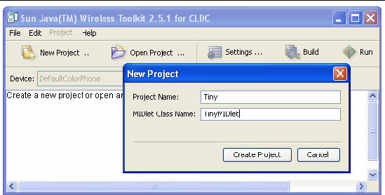
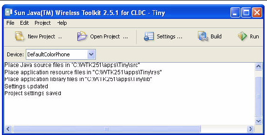
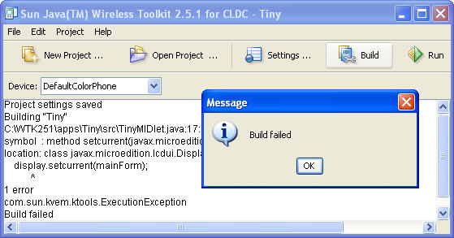
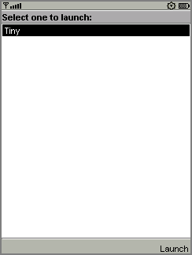
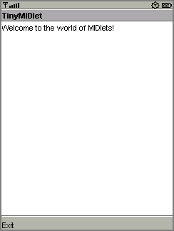
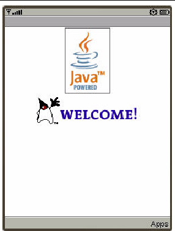
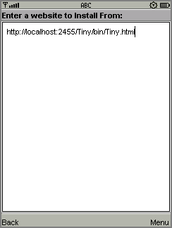
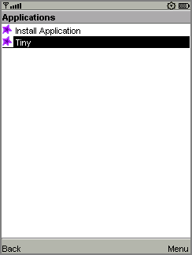
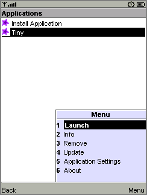

| Sun Java Wireless Toolkit for CLDC User's Guide |
| Sun Java Wireless Toolkit for CLDC User's Guide |
| C H A P T E R 2 |
|
Developing MIDlet Suites |
This chapter describes how you can use the Sun JavaTM Wireless Toolkit for CLDC to create applications. It begins with a description of toolkit projects, then works through the development process.
You are likely to follow two basic development cycles in creating MIDlet suite applications. The first is quicker and simpler. It is useful in your initial development. The second cycle is longer but allows for more comprehensive and realistic testing.
The end of the chapter contains information on how to use the Sun JavaTM Wireless Toolkit for CLDC with advanced development tools like an obfuscator and a debugger. A final section briefly describes how to configure a web server to serve MIDP applications.
In the Sun JavaTM Wireless Toolkit for CLDC, MIDlet suites are organized into projects, where the end result of one project is one MIDlet suite. A project contains all of the files that will be used to build a MIDlet suite, including Java source files, resource files, and the MIDlet descriptor.
The Sun JavaTM Wireless Toolkit for CLDC works on one project at a time. You can create a new project or open an existing project.
In this chapter uses a very simple example project. As you read about each step in the development cycles, you can work along in the toolkit.
To create a new project, first start the user interface. On Microsoft Windows, choose Start > Programs > Sun Java Wireless Toolkit 2.5.2 for CLDC > Wireless Toolkit 2.5.2.[1] The user interface appears, as shown in FIGURE 2-1.
FIGURE 2-1 The Toolkit's User Interface

Click New Project. The toolkit will ask you for the name of the project and the name of the MIDlet class you will write. Fill in the names and click Create Project.
FIGURE 2-2 Creating a New Project

The Settings window is displayed. Your choices affect the build environment for the project. The default options are fine for this example, so click OK to dismiss the window. Messages appear in the console telling you exactly where to store the source code and resource files for this project.
FIGURE 2-3 File Locations in the Console

The simple development cycle looks like this:
Edit source code > Build > Run
In this step, you create Java source files and resource files that will be used by your application.
The toolkit compiles and preverifies your Java source files.
The compiled Java class files are run on the emulator.
If an error occurs when the toolkit attempts to compile your source files, go back and edit them again. If you find a bug when you are testing your application in the emulator, edit the source files to fix the bug.
Now that you understand the simple development cycle at a high level, the rest of this section illustrates how you can accomplish each step using the Sun JavaTM Wireless Toolkit for CLDC.
Editing source code is the only step in which the Sun JavaTM Wireless Toolkit for CLDC is no help at all. Use the text editor of your choice to create and edit source code files. If you don't have a favorite text editor, try jEdit, at http://jedit.org/.
If you are following along with the sample project, create a new Java technology source file TinyMIDlet.java. Save it in your project's source directory. For example, on Windows this would be workdir\apps\Tiny\src\TinyMIDlet.java. This file contains this simple MIDlet:
Save the file when you are finished.
The next step is to build your source code. The toolkit makes this part very easy.
In the user interface, click the Build button. Assuming you saved your source file in the right place, the toolkit finds it and compiles it. Compilation errors are displayed in the console. If you have errors, as shown in FIGURE 2-4, edit the source code to fix them. Once you eliminate your errors, the console informs you that the build has completed successfully.
FIGURE 2-4 Messages About Building

Behind the scenes, the toolkit also preverifies the compiled class files. MIDlet class files must be preverified before they can be run on a MIDP device or emulator. The toolkit silently handles this detail for you. See the CLDC specification for more information on preverification.
Once the project builds successfully, you are ready to try it out in the emulator. Click the Run button. The emulator displays a list of all the MIDlets in your project.
FIGURE 2-5 List of Project MIDlets

Choose the MIDlet you want and select Launch. If you're following along with the TinyMIDlet example, the result is as shown in FIGURE 2-6.
FIGURE 2-6 TinyMIDlet in Action

The second development cycle is slightly more complicated. It consists of the following high-level steps:
Edit source code > Package > Install > Run
This is the same as in the simple cycle.
In this step, the Sun JavaTM Wireless Toolkit for CLDC compiles and preverifies the source files (essentially the same as the Build step from before). Then it bundles the Java class files and resource files into a MIDlet suite Java Archive (JAR) file and a MIDlet suite descriptor.
MIDlet suites need to be installed before they can be run. You can install the MIDlet suite into the Sun JavaTM Wireless Toolkit for CLDC emulator or a real device.
As in the simple development cycle, run your application and test for bugs.
In the full development cycle, the first step is identical to the simple development cycle. Editing source code is the same as always. The Build step is now incorporated in packaging.
The full development cycle includes two new steps, packaging and installing. Finally, running an installed application is different in important ways from running an application in the simple development cycle.
The Sun JavaTM Wireless Toolkit for CLDC automates the task of packaging a MIDlet suite. The end result of packaging is two files, a MIDlet descriptor and a MIDlet suite JAR file. The descriptor is a small text file that contains information about the MIDlet suite. The JAR file contains the class files and resources that make up the MIDlet suite. Devices can use the descriptor to learn about the application before downloading the entire JAR file, an important consideration in a memory-lean, bandwidth-starved wireless world.
To ask the toolkit to package your MIDlet suite, choose Project > Package > Create Package. The MIDlet suite descriptor and JAR file are generated and placed in the bin directory of your project.
Packaging might involve additional steps. You can use a code obfuscator to shrink the size of the MIDlet suite JAR file, a technique that is described later in this chapter. In addition, the toolkit provides tools to enable you to cryptographically sign MIDlet suites. See Chapter 6 for more information.
To properly test a MIDlet suite, install it into the toolkit's emulator or a real device. When you press the Run button in the user interface, the MIDlet suite is not installed into the emulator. Instead, the emulator runs the MIDlet classes directly.
The emulator also can install applications into its memory in a process that resembles how applications are transmitted and installed Over the Air (OTA) on real devices. To install applications in the Sun JavaTM Wireless Toolkit for CLDC emulator, choose Project > Run via OTA.
The emulator window opens, but instead of running your MIDlet classes directly, the emulator shows the Application Management Software (AMS) welcome screen. The emulator's software is an example of the type of software that real devices must have to manage MIDlet suites.
FIGURE 2-7 Emulator AMS Welcome Screen

Choose Apps to go to the main list of installed applications. Select Install Application and press the select button on the emulator. The emulator prompts you for the URL location of the application you want to install. The URL is already completed for you.

From the menu, choose Go to begin the installation. The emulator shows a list of the applications it finds at the URL. Choose the only one and select Install from the menu. The emulator gives you one last chance to confirm your intentions.
FIGURE 2-9 Confirming the Installation

Choose Install again to finish the installation. You are returned to the emulator's installed list of applications, which now includes the application you just installed.

Run via OTA is an extremely useful mechanism that makes it easy to install your MIDlet suite on the toolkit emulator. Some features must be tested using this technique, including the push registry and the installation of signed MIDlet suites.
If you want to test your MIDlet suite on a real device, you must install it first. How this happens depends heavily on the device you are using. The following two possibilities are most likely:
Once the application is installed, choose the application from the list and choose Launch from the menu.
FIGURE 2-11 Launching the Installed Application

Running an application on a real device depends heavily on the device itself. Consult your device documentation for information.
You can also create a Sun JavaTM Wireless Toolkit for CLDC project from a MIDlet suite archive (.jar file) and descriptor (.jad file). This is useful for running MIDlet suites from the toolkit user interface even when you don't have the source code available. You can use the toolkit to easily manipulate the attributes in the descriptor, or you can run the project and use the toolkit's monitoring tools (described in Chapter 5) to scrutinize its behavior.
To create a project based on a MIDlet suite choose File > Create project from JAD/JAR. Navigate to the descriptor you wish to use and click Open. Note that the descriptor and the JAR file must be in the same directory.
An obfuscator is a tool that reduces the size of class files. MIDlet suites need to be compact, both to minimize download times and to comply with sometimes stringent limits on JAR file size imposed by manufacturers or carriers. Using an obfuscator is one way (not the only way) that you can keep your MIDlet suite JAR file small.
You can use an obfuscator in the packaging step of the development cycle. Although the Sun JavaTM Wireless Toolkit for CLDC doesn't come with an obfuscator, it is already configured to use the ProGuard obfuscator. All you need to do is download ProGuard and put it in a place where the toolkit can find it.
ProGuard is published under the terms of the GNU General Public License (GPL). If you are comfortable with the terms of the license, you can download and use ProGuard free of charge.
Follow these steps to install ProGuard:
1. Go to the ProGuard web site, http://proguard.sourceforge.net/.
2. Download the latest version.
3. Uncompress the proguard.jar file from the lib directory of the ProGuard installation to the toolkit/bin directory.
Once ProGuard is installed, you can use it by choosing Project > Package > Create Obfuscated Package.
In some cases, you need to provide a script file that controls how the obfuscator works. If you are loading classes using Class.forName(), for example, you need to tell ProGuard to leave the class names unchanged.
To call the script file you must be able to modify your own copy of the file ktools.properties.
 Copy toolkit/wtklib/os/ktools.properties to workdir/wtklib/os/ktools.properties.
Copy toolkit/wtklib/os/ktools.properties to workdir/wtklib/os/ktools.properties.
Create a script file using a text editor, then save it under the project's main directory. Consult the ProGuard documentation for information on script files. Next, tell the toolkit how to find this file. To do this, edit the ktools.properties file you have copied to workdir/wtklib. Add a line as follows:
obfuscate.script.name: scriptfile
Replace scriptfile with the name you used for the script file. You must quit and restart the toolkit for the change to take effect.
A variation on running your application is running it with a debugger. A debugger enables you to monitor the running application more closely, set breakpoints, and examine variables.
You must supply your own debugger. You can use the jdb debugger from the Java SE platform or another debugger of your choice. If you want to use a debugger, an Integrated Development Environment (IDE) like Sun Java Studio Mobility software, which incorporates the Sun JavaTM Wireless Toolkit for CLDC, is your most likely choice. See http://www.sun.com/software/products/jsmobility/ for more information.
Begin by choosing Project > Debug. Enter the TCP/IP port number that the debugger uses to connect to the emulator. Click Debug. The emulator begins running and waits for a connection from a debugger.
Start your debugger and attach it to the port you specified. Make sure to set the remote debugger to run in remote mode and to use TCP/IP. For more information, consult the debugger's documentation.
Debugging MIDlets has information about using jdb with the Sun JavaTM Wireless Toolkit for CLDC. It is available at
http://developers.sun.com/techtopics/mobility/midp/questions/jdb/.
The MIDP 2.0 specification includes the Over The Air User Initiated Provisioning Specification, which describes how MIDlet suites can be transferred over-the-air (OTA) to a device. You can test this type of scenario using the Sun JavaTM Wireless Toolkit for CLDC emulator.
To deploy a packaged MIDP application remotely on a web server, change the Java Application Descriptor (JAD) file's MIDlet-Jar-URL property to the URL of the JAR file. The URL must be an absolute path. For example:
MIDlet-Jar-URL: http://your.server.com/midlets/example.jar
Next, ensure that the web server uses the correct MIME types for JAD and JAR files:
The details of how to configure a web server depend on the specific software used.
The emulator implements the device behavior during OTA provisioning. You can use the emulator to test and demonstrate the full provisioning process of MIDlet suites from a server to the device. All you need to do is launch the emulator's AMS. You might already be familiar with the AMS if you have used the Run via OTA option.
To launch the emulator's AMS, you have two options:
Now follow the AMS prompts to install your application. This process is very similar to the Run via OTA option described earlier in this chapter, except you must enter the URL of your own server to install your application.
| Sun Java Wireless Toolkit for CLDC User's Guide |
Copyright © 2007, Sun Microsystems, Inc. All Rights Reserved.